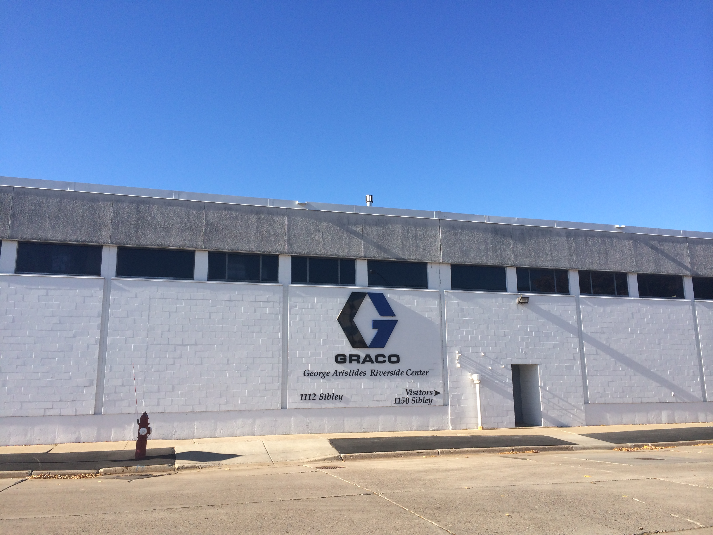
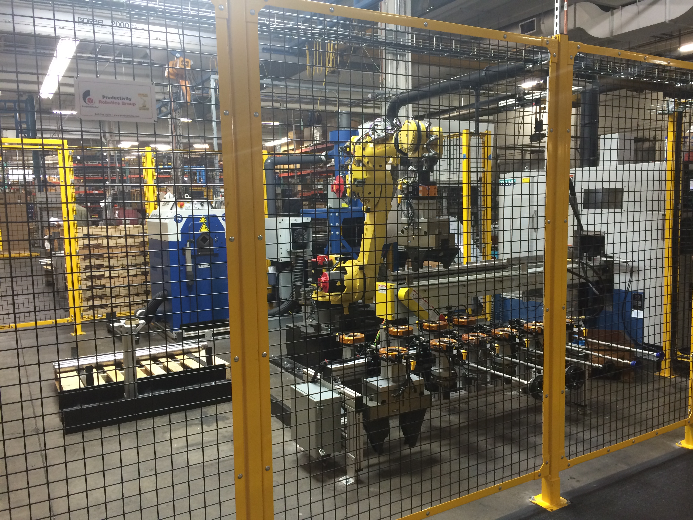

SCO 3001 Operations Tour Project
Graco Gallery
- Graco's production plant
- Display of some of their diaphragm pumps
- Same thing
 Here is a mill/grinder
Here is a mill/grinder- It sharpens up the plain metal casting
- Here is an enclosed saw. It cuts effortlessly through steel bars.
- Machine here adds chamfers (curved edges) to part.
- Adhesives dispenser
- Same thing
- Robotic arm lifting 4' steel rods
 Graco cuts these bars in house to save money
Graco cuts these bars in house to save money- They are shipped in at 12'
- Fence is there for safety purposes
- Things to-be-painted on a hook
- Many different parts can be put onto hooks
- Same thing
- They first go through a giant washer to remove impurities
- A process-control whiteboard for employees to see
- Guy painting
- Don't forget to wear a mask. It's toxic stuff!
 Paint is stored in this room. Graco uses their own paint applicators!
Paint is stored in this room. Graco uses their own paint applicators!- Another process-control whiteboard. This time for output.
- A massive 1-inch diameter drill bit.
- Forget what this was
- View of their plant
- Notice the 5S chart!
Use Arrow Keys to Manually Navigate Through Slides, or Click on Icon on Leftmost or Rightmost Edge of Image.